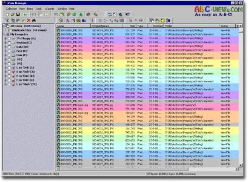

|
|
| ABC-View In-Depth Articles |
 How does duplicate
checking work?
How does duplicate
checking work?
Introduction
The average harddisk these days collects hundreds and hundreds of images,
of which you, the user, after a while don't know you even had them stored
there and there.
Chances are that there are a lot of duplicates between them, taking up
space without any reason. With ABC-View Manager you can delete those easily.
Add the files you want to check
Before you can use ABC-View for duplicate checking you will need to add
a list of files to it.
The easiest way to do this is by selecting the folders you want to add to the duplicate search. Browse the folder tree on the left, use doubleclick to open folders to go to subfolders.
You can click the little white square in front of the folder to add it to the selection. Adding a "closed" folder will also automatically add all its subfolders.
 |
You can add more than one folder by ticking more than one checkmark
in the folder tree list. |
Filter the duplicates
Once all the files pop up, you can apply a filter to the data. Rightclick
on "All Items" and then select an appropriate filter ("Add
Filter").
To check for exact duplicates, select  Find Duplicates. A dialog appears where you can specify some advanced
settings but usually the defaults are adequate.
Find Duplicates. A dialog appears where you can specify some advanced
settings but usually the defaults are adequate.
Click on OK and the duplicate checking starts immediately. You can see the progress in the status bar. This is a background process so you can keep on working and viewing files. Note that during this time, ABC-View Manager is doing a lot of work: finding all files that are identical in size and comparing their contents for differences.
You will notice (depending on number of files you have) that slowly the window will fill with duplicates. Important: there's always a duplicate AND an original present in this list. ABC-View does not know which is which (they are identical).
When completely finished, ABC-View will sort the duplicates list so that all duplicate groups are grouped together in recognisable color bands.

How can you select just the duplicates?
First, sort on any property you want. If you want to remove the newest
duplicates then sort the list on date from old to new. Now, rightclick
on one item, go to "Select", and then "Select Duplicates".
Of each pair or triple, the first in the list will be left unselected, however the 2nd, 3rd, etc will be selected. You can easily remove them now by pressing Delete.
Delete them with caution
When you press Delete, a window
will appear in which you can check the final selection and even remove
items from this selection again.
Then you can opt to put the files in the recyclebin, an archive folder, a ZIP-archive or to delete them directly.
Download ABC-View Manager Back to article index
| Page last changed 19Jan2004 - © ABC-View 2001-2004 | |||
|